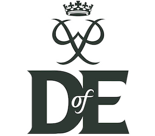

Are you considering participating in the Duke of Edinburgh Award programme? If so, we highly encourage you to consider volunteering with us. Not only will you gain valuable work experience and training, but you'll also be able to contribute to something meaningful in a supportive and fun atmosphere. Sounds like a win-win to us!
- Linked to Sherburn Group Practice
- Repeat prescription requests - drop into shop anytime
- Prescription medicine collection:
- 11:00 to 13:00 Monday & Thursday
- 17:00 to 19:00 Wednesday & Friday
- Prescription requests are collected from the shop by the surgery on Wednesday (11am) and Friday evening and then processed. Please take this timing into acount when placing your requests.
- All counter services
- Stamps
- Parcels
- Pensions
- Utility bill payments
- DVLA
- Banking
- Cash deposits & withdrawals
- Please note that passport applications cannot be processed